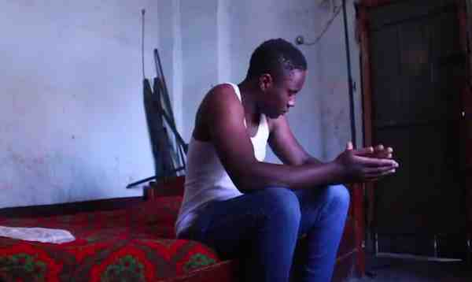

Okwemazissa kwékweteeka mumbeera/ obwagazzi bwókwegatta .Kikolwa ekinyuma ekikuteeka mumbeera nékikumazisa/okutuusa kuntiko. Okumala/okutuuka kuntiko kukyamukka okwómubiri olwóssanyusibwa ekyensusso.
Okwemazisanganya kyiringa okwemazisa, okujjako nti wano omwagalwa wo yákikukolera. Akwatilira ebitundu byo ebyékyama. Owulira bulungi nyo kisobola nókumazisa/okutusa kuntikko.